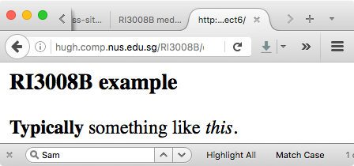

Intro
The common pattern “web application” can be done in many ways. Previously, we saw various application architectures:

The common pattern “web application” in the above example, has the web server clearly separated from the application server, which is, in a sense, removed from the details of the web application. The application server may include notions of sessions, but not frames, HTML and so on. Similarly the requests to the data server may be removed from the details of which database is in use and so on.
It turns out that a relatively easy attack surface are these internal links, between the components of the application.
To understand in detail the mechanism behind these attacks, we must consider several of the components, including how we use markup languages to build web applications.
Descent into the darkness...
“Imagine a world with no URLS.” Well - it once existed. But then along
came Tim Berners-Lee in 1989, with his suggestion to use a particular
markup meta-language with links, for managing and linking information.
At that time hypertext and markup languages were common, but TimBL
thought it would be pretty neat to link all that with Internet
protocols, and so along came http://web.site/document.html (and
ftp://web.site/doc, and rtsp://abc.def/g).

The original markup language used was called HTML (Hyper-Text Markup Language) and is based on an ancient markup language SGML (Standard Generalized Markup Language). The following text is valid HTML for the above:
DADA example</h1>
<b>Typically</b> something like <I>this</I>.
The original vision was for a gigantic network of interlinked documents, rendered nicely on your workstation, but kept on a server: the WWW, wone web to wule them all and in the darkness bind them. In essence such a network would be reasonably safe - it is a read-only system, and all documents on a server should be public, right?
The problem of course was with the masses. Always a troublesome group of people. They pretty quickly got bored, and wanted documents to sing and dance, and change according to whim. The solution to this was to provide for active content in WWW documents. The can of worms was opened...
Active content - client side
In an abstract sense, there are two standard ways that have been promoted for providing active content. The two ways are:
-
Client side - where the web server sends you or your browser a program which you run.
-
Server side - where the web server runs a program (or a script) on your behalf.
Starting with the client side, when you use Java applets, or Javascript, you are using this method for providing active content. The web server stores the Java program, and it is downloaded to your computer to be executed on your computer. There are obvious security issues here, and Sun’s Java (originally in the HotJava browser) attempted to address these issues right from the beginning. The main idea was that the Java programs could not execute directly on the processor in your computer - they were executable code for a Java machine (which does not exist), not for an Intel processor. When the browser downloaded the program from the server, it would then run a “Java Virtual Machine”, which would interpret the executable code, and place limits on what that code can do. Conceptually Java still operates in this way.
The general rule for client side active content that (hopefully) protects us, is that all code that the server sends your browser to execute will be limited in its ability. This is ensured by running such code inside a virtual machine, with well-defined limits on access between the virtual machine, and your real machine. These systems are fairly well implemented, and attacks on your computer system using this route require someone to install the bad code on the server, and find a way to bypass the controls on the virtual machine. With care, with good management of the software on your computer, and with well-protected web-sites, such avenues of attack can be limited.
Active content - server side
Another technique for providing active content, is for the server to execute code on your behalf. A common way in which this is done, is to encode programs in web pages, which are executed by the server before sending you the web page. This way is commonly called server-side scripting, and when you use PHP, ASP or CGI, this is what is happening. An example of a PHP script embedded in a web page is this:
DADA example</h3>
<?php
$i = 3;
while ($i >= 0) {
print Hello World $i<p>;
$i--;
}
?>
The code inside the <?php and ?> tags is executed in a PHP
interpreter on the web server, and a web page sent to the client. The
actual web page returned is
DADA example</h3>
Hello World 3<p>
Hello World 2<p>...
Unfortunately, as we saw in class, a malicious user may be able to convince the script to execute something different from what is expected on the server.
SQL injection
Consider the following code for showing student grades - it puts up a form, in which the user fills in his or her student matriculation ID:
DADA injection demo</h3>
...
<hr> Student grade result system...
<form action=grades.php action=get>
Student ID: <input type=text name=matric/>
<input type=submit/>
</form>
The value filled in by the user is passed to the following PHP server
code in the variable $matric, and is used to do a SQL database
lookup, to find the mark for the corresponding user:
<?php
..login to SQL database, with correct access (?)..
$sql = SELECT ‘marks‘ FROM ‘test‘.‘mrks‘
WHERE userName=’$matric’;
$result = mysql_query($cmd[$cnt])
or die(’An error occured: ’ . mysql_error());
$row = mysql_fetch_assoc($result));
$row_text = $row[’marks’];
print Mark for $matric so far...
?>
Unfortunately, there is no check on the input coming from the form, and so as we saw in class, we can convince the code executing on the server to update the marks. For anyone. Errk.
The specific attack shown here is the SQL injection, but many similar attacks may be possible if unchecked user input (from the browser) is used as input to a program running on the server.
One (partial) solution to this attack
One possible way of restricting this attack is based on our knowledge of hash functions from class. We change the SQL command to the following:
$sql = SELECT ‘marks‘ FROM ‘test‘.‘mrks‘
WHERE MD5(userName)=’.md5($matric).’;
In this case, the user input in $matric is hashed and compared in
the SQL server with a hashed username. It is hard for someone to insert
in an injection when all input is hashed.
Cross site scripting
In cross site scripting, a web based application without good input or output validation controls, can be coerced into returning deceptive or bad web pages, and provide mechanisms for stealing data.
An example of such an uncontrolled application is the comments.php application which provides a forum for student comments. The code has a form for inputting data something like this:
DADA Comment system</h3>
<form action=comments.php?method=1 action=get>
Student ID: <input type=text name=matric/><br/>
Password: <input type=password name=pass/><br/>
Comment: <input type=text size= name=comment/>
<input type=submit value=Submit your comment!/>
</form>
In addition it has some active content for inserting and retrieving comments from some sort of database.
<?php
... if usercode and password OK ...
... update comments from $comment...
fputs($fp,$comment) or exit(Cannot write to file);
... find other comments, put in variable $data ...
echo $data;
?>
In use, students can insert malicious (say Javascript) code in their comment, and when others read the comment, they will execute the code.
One (partial) solution to this attack
One possible way of restricting this attack is based on an idea of restricting all input and output to be absolutely standard HTML. We force no Javascript on either input or output. A sample library which does this is HTMLPurify, which we use as follows:
<?php
require_once ’HTMLPurifier.auto.php’;
require_once ’HTMLPurifier.func.php’;
...
... find other comments, put in variable $data ...
$goodhtml = HTMLPurifier($data);
echo $goodhtml;
?>
The library will ensure that only standard HTML is output back to the browser.
Defences...
Perhaps we would be best to start with the 8 guidelines we saw in the complexity lecture, and the use of frameworks. In class we see the use of various software mechanisms to check and validate the inputs and outputs, to and from a software module.
We have seen some avenues for attack on web-based applications. The samples shown are only the tip of the iceberg, and the classification I use is completely arbitrary, however, I think all the presentations are fairly accurate.